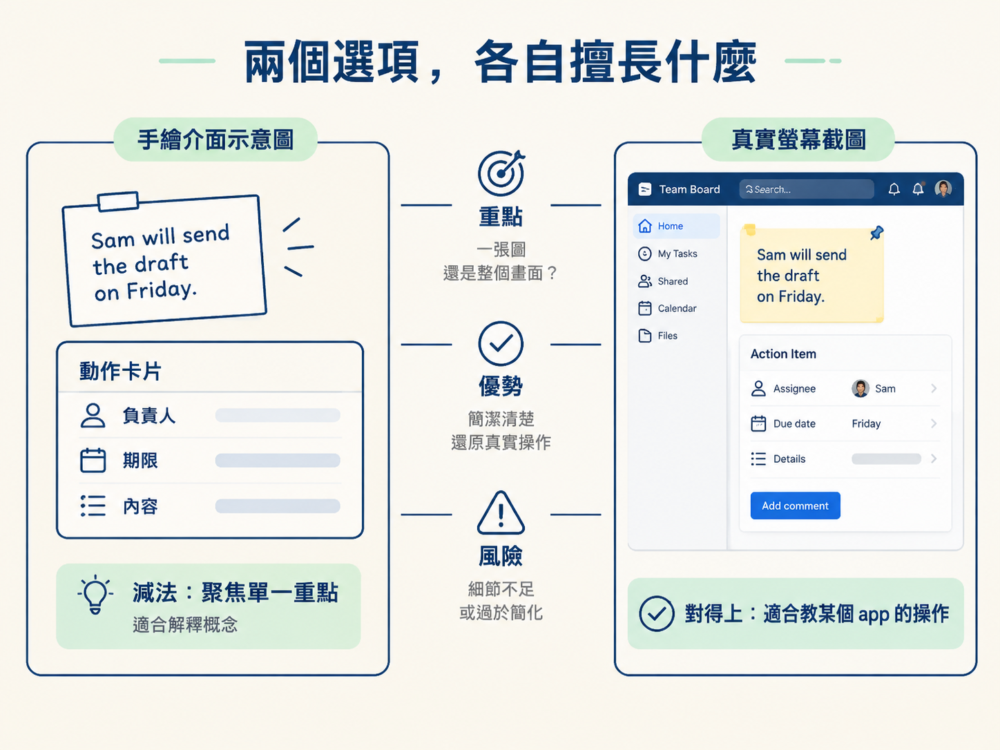

做教學畫面時，常會遇到一個選擇：要請 AI 畫一張乾淨的示意圖，還是直接放上真實的軟體截圖？這不是「哪一種比較漂亮」的問題，而是要看觀眾下一步要做什麼。
如果觀眾只是要理解一個概念，畫面應該幫他把重點挑出來；如果觀眾等一下要打開某個 app 動手操作，畫面就必須讓他找得到真正的按鈕。這一課會用共同範例 Sam 和 Friday，判斷兩種畫面各自適合什麼情境，以及選錯時會發生什麼事。
先把兩種畫面放在一起比較。關鍵差異在於：觀眾能不能把畫面上的內容，對應到自己接下來要做的事。
| 選項 | 最適合 | 它給觀眾什麼 | 它的風險 |
|---|---|---|---|
| 乾淨的手繪介面 | 解釋一個概念或流程 | 去掉雜訊，聚焦單一重點 | 可能被誤認為真實畫面 |
| 真實的螢幕截圖 | 教某個 app 裡的操作 | 看得到一模一樣的按鈕 | 畫面雜訊多、字可能偏小 |
手繪介面的長處是「減法」。例如要說明便利貼上的 Sam、Friday，如何對應到卡片裡的三個欄位，可以只畫出便利貼和卡片，拿掉無關的按鈕、選單與側邊欄。字可以放大，視線也能直接落在對應關係上。
這種畫面很適合解釋抽象概念，或說明幾個步驟之間的關係。它像一張整理過的地圖，不把每條巷子都畫出來，只留下讀者現在需要走的那條路。
真實截圖的長處則是「對得上」。如果觀眾接下來要在某個 app 裡操作，他需要看到按鈕實際長在哪裡、是什麼顏色，以及周圍有哪些介面。手繪圖即使畫得很清楚，也無法取代真實畫面的對照效果。

選擇前，先問自己一句話：
觀眾看完這一格後，是要「懂一個概念」，還是要「在某個 app 裡做一個動作」？
如果答案是「懂一個概念」，例如理解便利貼上的 Sam、Friday 如何對應到卡片欄位，就使用乾淨的手繪介面。讓 AI 把畫面簡化，留下便利貼、動作卡片和必要的文字，讓觀眾一眼看懂兩者的關係。
如果答案是「做一個動作」，例如教觀眾到某個程式裡按下播放鍵，就使用真實截圖。觀眾的任務是找到那個控制項；他需要的是和自己眼前一模一樣的畫面，而不是一個看起來相似的按鈕。
最常見的錯誤，是把「理解概念」和「尋找按鈕」混在一起。
想像你要教觀眾在瀏覽器裡按下播放鍵，卻使用了一張乾淨的手繪示意圖。圖上的按鈕位置被移動了，旁邊的介面也被簡化。觀眾或許看得懂「這裡有一個播放鍵」，但回到自己的瀏覽器後，卻找不到真正的按鈕。這時候，本來該用真實截圖，你卻用了手繪介面。
反過來也會翻車。內容如果只是要說明一個抽象概念，你卻放上一張塞滿資訊的真實截圖，觀眾的注意力就可能被十幾個按鈕和選單拉走，反而沒看見 Sam、Friday 或欄位之間的重點關係。
真實不一定等於清楚。用錯時機，真實畫面就像把整個工具箱倒在桌上：東西都在，但讀者不知道該先看哪一個。
還有一個細節不能漏掉：使用手繪介面時，要讓觀眾知道這是「示意圖」，不是真實的軟體畫面。乾淨的示意圖可以幫助觀眾理解想法，但不能讓他誤以為這就是實際介面。加上一個清楚的示意標記，就能避免觀眾回到真實軟體後，拿著圖到處對照卻找不到相同畫面。
先問「觀眾下一步要做什麼」：要懂一個概念，就用乾淨的手繪介面，把重點留下、雜訊拿掉；要完成一個實際操作，就用真實截圖，讓畫面對得上他真正會看到的介面。使用示意圖時，記得清楚標示它只是示意。
視覺選對之後，下一關就是檢查播放效果：字是否仍然讀得清楚、強調是否只出現一次，以及畫面是否剛好跟著旁白出現。接下來，我們會把整個驗證流程走一遍。